가교 히알루론산
THE HA COLLECTION / AESTYVEThe science
The science
of form.
소재에서 시작되는 에스티브의 미학.
보이는 형태를 넘어, 소재의 구조까지. Alpha · Beta · Gamma, 세 가지 표현을 만나다.
소재와 기술 탐색 ↗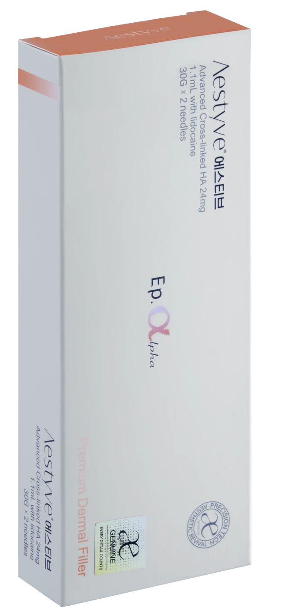
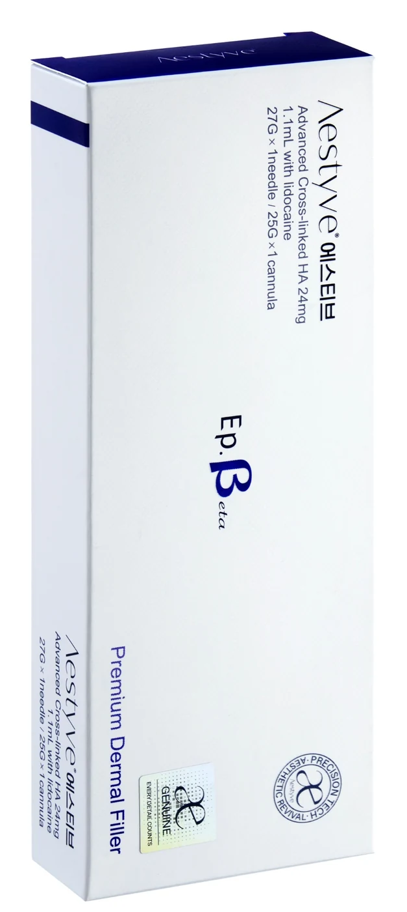
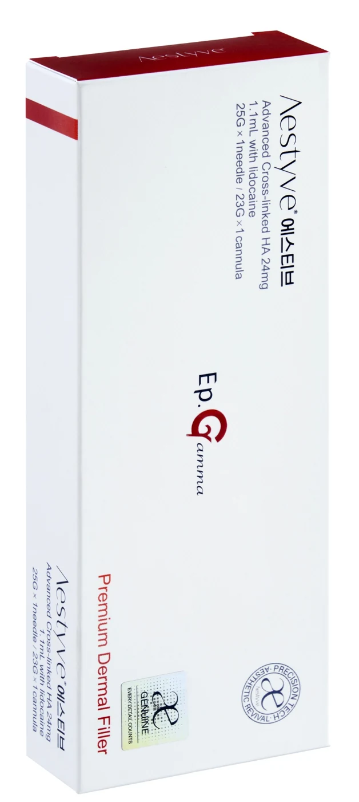
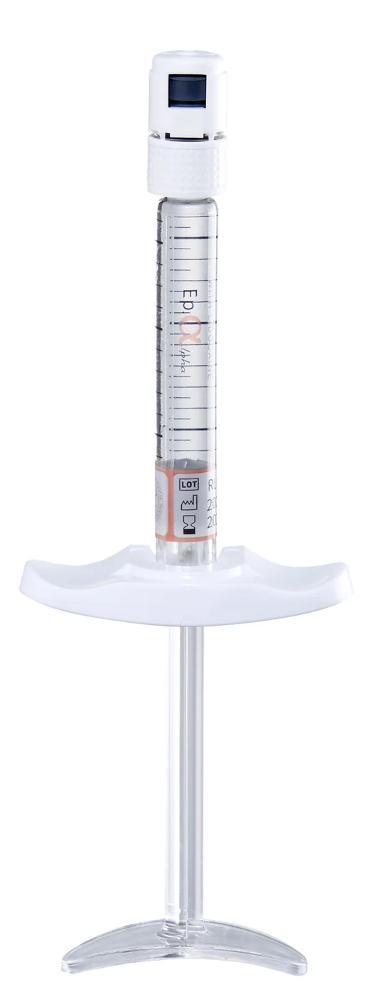
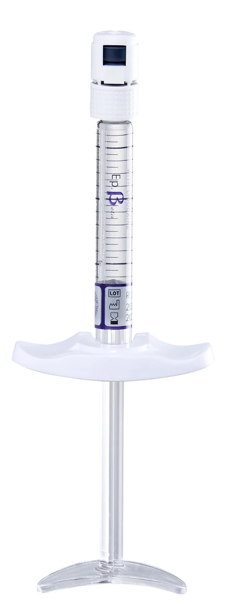
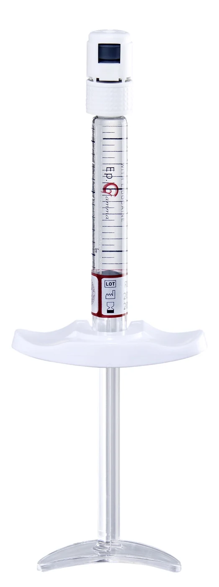
01 / HYALURONIC ACID24mg/mL
가교 히알루론산
02 / LIDOCAINE HCl0.3%
리도카인염산염
3 mg/mL03 / BUFFERq.s.
인산완충생리식염수
좌우로 드래그해 컬렉션을 탐색하세요
01 / MATERIAL
What is within.
소재의 본질을 들여다보다.
가교 히알루론산과 리도카인염산염으로 구성된 HA 젤. 빛을 머금은 질감에서, 소재를 이해하는 여정이 시작됩니다.
HYALURONIC ACID / TEXTURE 01
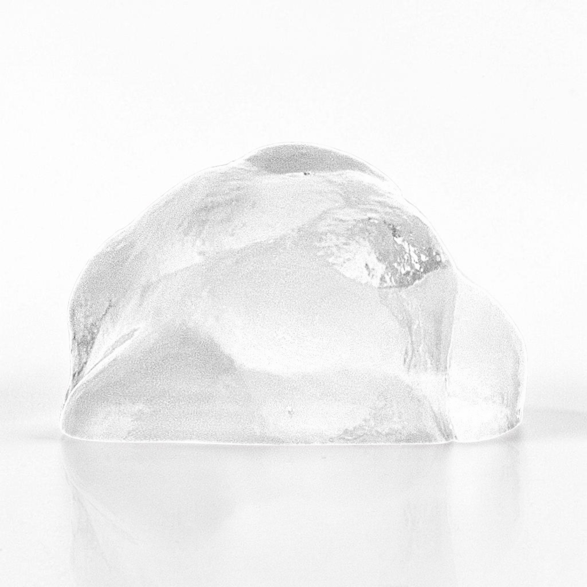
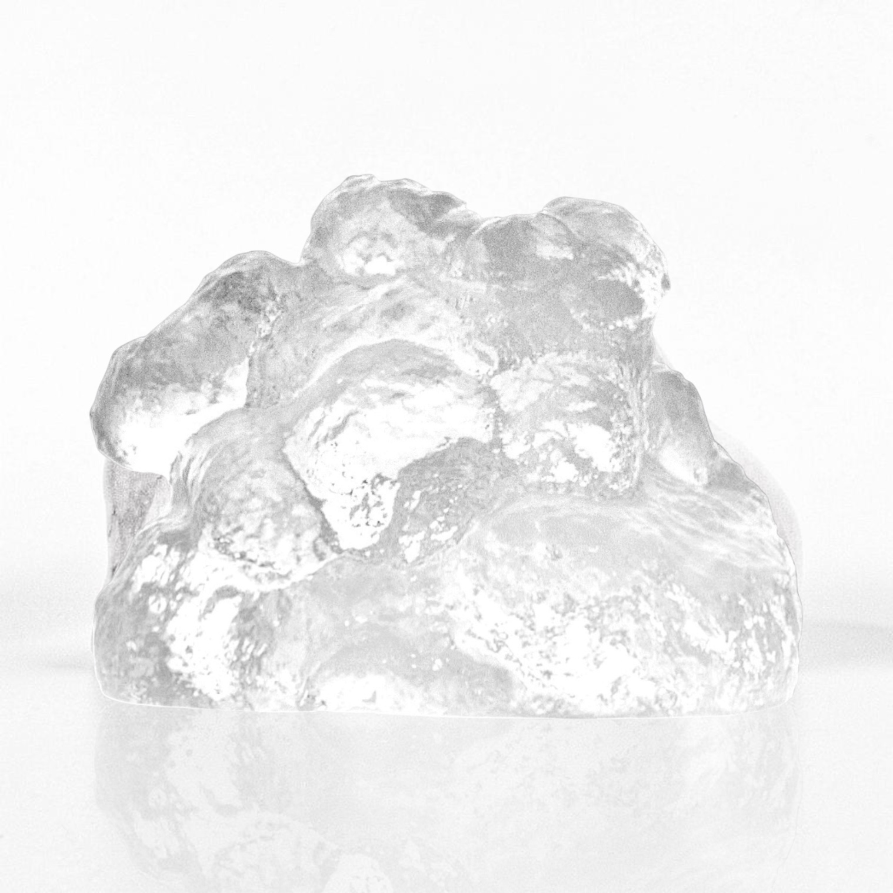
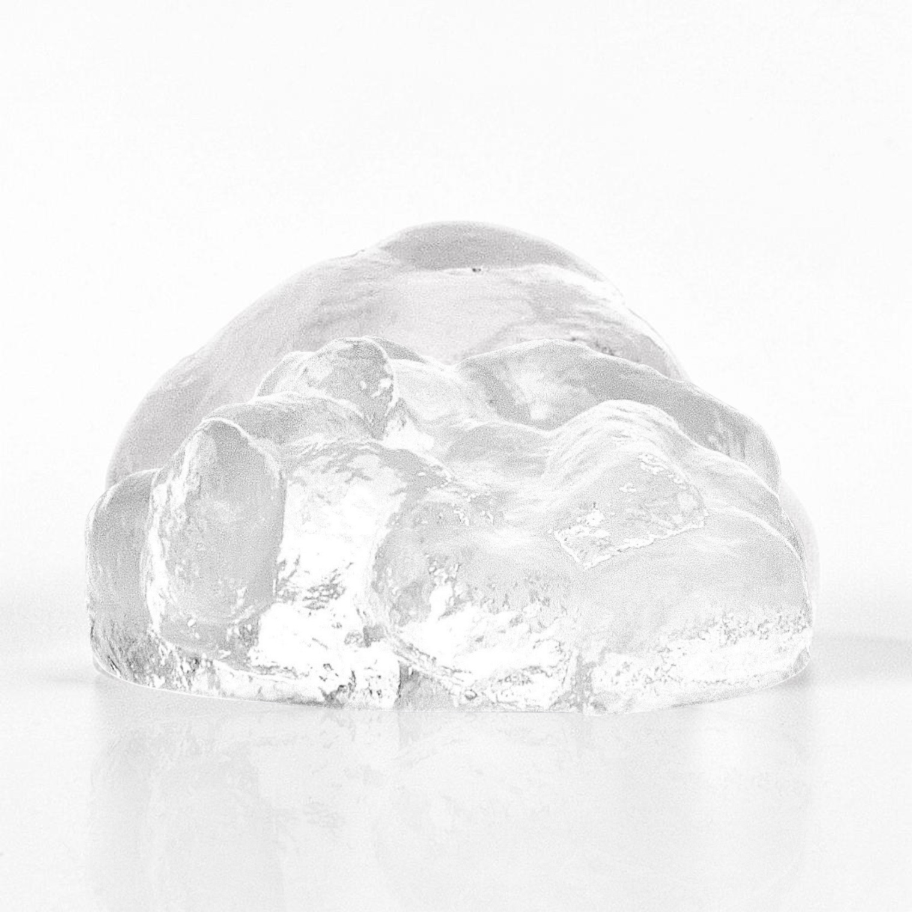
↔ 드래그하여 세 가지 겔 질감 살펴보기
리도카인염산염
시린지 용량
제공된 겔 질감 사진 · 시험 결과 이미지가 아닙니다.
02 / STRUCTURE & PERFORMANCE
구조에서 물성으로.
제조사 기술자료에 담긴 공정과 시험값을 하나씩 살펴보세요.
HBCT / MICROSTRUCTURE
Structure by design.
저온 가교에서 시작되는 미세구조.
제조사 자료는 저온 가교를 통한 입체적 HA 젤의 미세구조를 HBCT 공정으로 설명합니다.
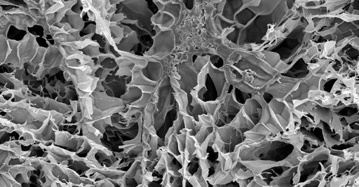
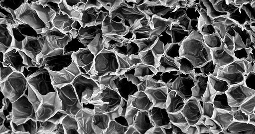
원본 SEM 이미지 · 배율·전처리·반복 수 상세 미제시. 이미지만으로 임상적 우열을 정량화하지 않습니다.
저장탄성률 G′
제조사 제형별 범위
Fine60–120Pa
0150300 Pa
제형을 드래그하거나 버튼으로 선택하세요
막대는 평균이나 오차가 아닌 보고된 범위입니다. 측정 온도·주파수·변형률·반복 수는 상세 미제시.
일관된 흐름을 향한 가공.
13.62N제조사 Deep 제형 · 27G 니들 · 평균 압출력
MGT는 젤을 고르고 일관되게 가공하는 미세 분쇄 기술입니다. 표시값은 제조사 시험의 평균값입니다.
젤 내부의 결합을 관찰하다.
응집성 시험 · 원자료에 표기된 길이
Fine2.4cm
Deep2.1cm
Volume2.0cm
시험 속도·온도·반복 수 상세 미제시. 길이는 임상 성능의 순위를 뜻하지 않습니다.
03 / PURITY
정제의 과정, 관리의 기준.
원료의 관리 기준과 최종 제품의 시험값을 구분해 확인하세요.
HA 원료 관리 기준
- 엔도톡신
- ≤ 0.020 IU/mg
- 미생물 오염
- ≤ 5 CFU/g
최종 제품 시험표
- BDDE 잔류량
- 0 ppm / 보고값
- 중금속
- < 1.0 ppm / 보고값
PURIFICATION02
2단계 · 2주 정제
제조사 기술자료 기준. 0 ppm은 보고된 시험값이며, 검출한계가 미제시되어 절대적 무잔류를 뜻하지 않습니다.
04 / PRECLINICAL OBSERVATION
시간에 따른 관찰.
저탄성 제형의 동물시험 MRI 원본. 두 관찰 구간을 선택해 확인하세요.
MRI / OBSERVATION SERIES
0 주1 주2 주3 주
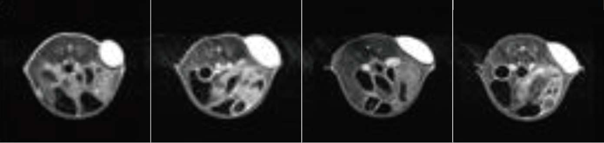
4 주8 주16 주24 주
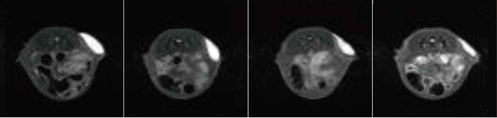
KBIOHealth 동물센터 · 2020.09.18–2021.03.23. 관찰 시점이며 사람의 유지기간·잔존율·안전성을 입증하는 수치가 아닙니다.
05 / THE COLLECTION
한눈에 보는 컬렉션.
| 제품 사양 | Ep. Alpha | Ep. Beta | Ep. Gamma |
|---|---|---|---|
| 가교 히알루론산 | 24 mg/mL | 24 mg/mL | 24 mg/mL |
| 리도카인염산염 | 3 mg/mL (0.3%) | 3 mg/mL (0.3%) | 3 mg/mL (0.3%) |
| 시린지 용량 | 1.1 mL | 1.1 mL | 1.1 mL |
| 니들 | 30G × 2 | 27G × 1 | 25G × 1 |
| 캐뉼라 | — | 25G × 1 | 23G × 1 |
에스티브 패키지 표기 기준. 보관 2–25°C, 빛과 습기 회피. 유효기간·로트·사용 정보는 최신 라벨과 사용설명서를 확인하세요.
자료와 출처 확인
제품 조성·용량·구성품: Aestyve 패키지(P01). 공정·시험: 제조사 기술자료 2026.01.26, p.4–6·9(T01), 제조사 영문 브로슈어 p.1(T02). 「필러 카탈로그 제작」의 2026 HA Collection 정리본을 기준으로 구성했습니다. Fine·Deep·Volume은 제조사 제형 표기이며 Aestyve 자체 임상 결과로 제시하지 않습니다.
학술 카탈로그 · 한국어 PDF ↗